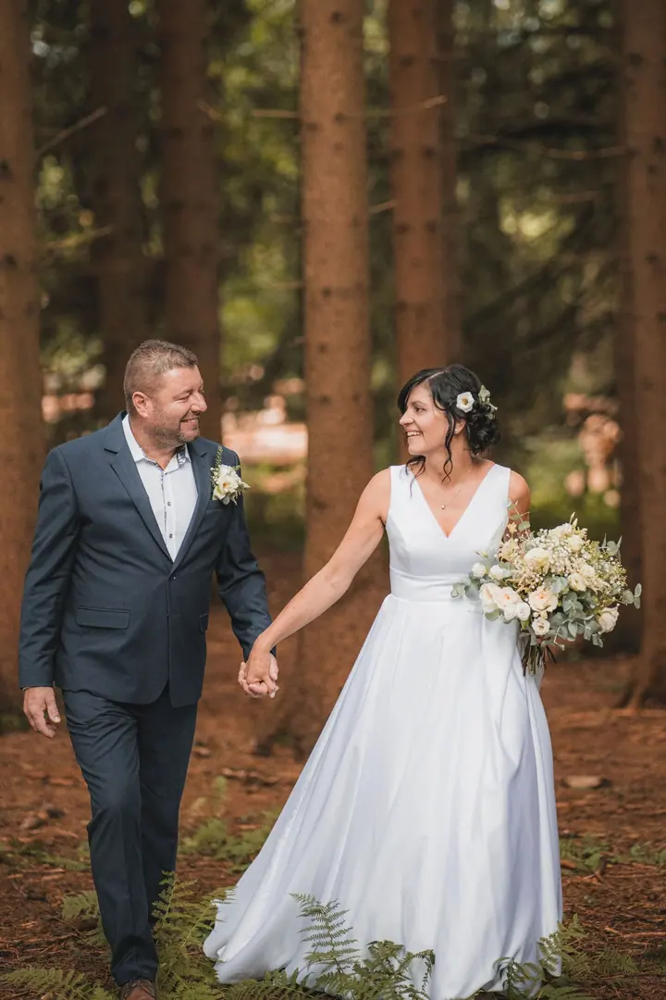
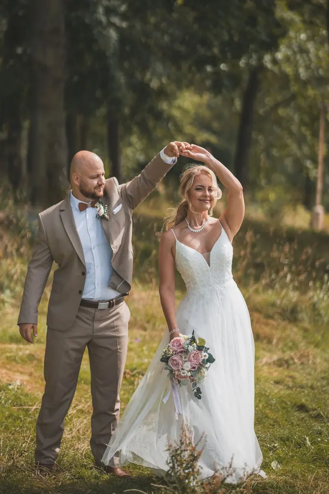
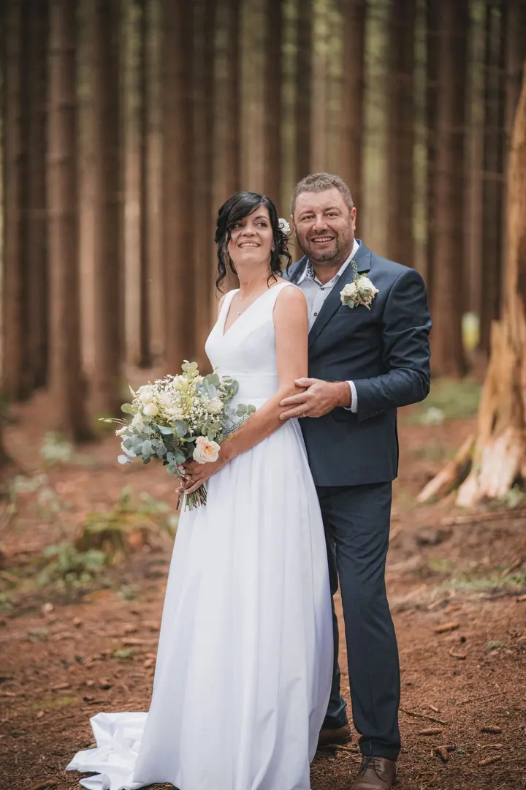
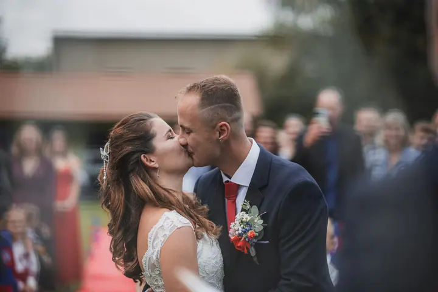

Svatba
Od obřadu až po první tanec budu s vámi ve chvílích, kdy se smějete, dojímáte i tančíte. Až 8 hodin focení a zhruba 250 fotografií za 14 500 Kč.

Jmenuji se Martin Šotola, žiju v Přerově a fotím svatby pod značkou Cvaknu Svatbu. Nenutím vás do póz, spíš sleduju, co se kolem děje, a když je okamžik správný, prostě …
Rezervovat termínNebudu vám vyprávět vymyšlený příběh o tom, jak jsem začínal se starým foťákem z půdy chalupy, protože to tak prostě není. Jen jsem měl dost fotek z mobilu a chtěl jsem naše vzpomínky uchovat v lepší kvalitě. Z touhy mít krásné rodinné album se stal koníček a nakonec moje vysněná práce: ukládat vzpomínky i do vašich alb.


Nejsem ten fotograf, co stojí uprostřed sálu a křičí „smějte se!“. Číhám na chvíle, které se dějí samy od sebe: tichý smích, nenápadný pohled, pár slov, která si říkáte jen pro sebe. Moje fotky jsou tak trochu nenápadné, ale o to pravdivější. Až se na svůj den podíváte zpátky, poznáte přesně, jak to celé probíhalo.
Žiju v Přerově, takže nejčastěji fotím v okolních městech. Rád ale cestuju a poznávám nová místa, takže za vámi přijedu opravdu kamkoliv. Moje focení totiž není o fotkách. Je o tom, co si ze svatby budete pamatovat, i když ráno budete mít kruhy pod očima.
Co fotím
Od obřadu až po první tanec budu s vámi ve chvílích, kdy se smějete, dojímáte i tančíte. Až 8 hodin focení a zhruba 250 fotografií za 14 500 Kč.
Svatební příběh s osobním přístupem: až 12 hodin focení, zhruba 350 fotografií, fotosešit a předání na dřevěném USB v bookletu. Cena je 19 500 Kč.
To nejdůležitější: obřad, emoce, polibek a skupinové i párové fotky. Hodí se pro kratší svatby a komorní obřady, až 3 hodiny focení za 7 000 Kč.
Postup
Vyplňte formulář s datem svatby a balíčkem, který se vám líbí. Ozvu se vám a domluvíme se, jestli mám termín volný.
Termín je potvrzený zaplacením rezervačního poplatku ve výši 50 % ceny balíčku. Pak spolu probereme váš plán dne a vaši představu.
Projdeme se, popovídáme si o tom, jak si svůj den užíváte, a já mezitím fotím. Žádné strojené pózy a umělé úsměvy.
Upravené fotky dostanete v plném rozlišení do 3 týdnů, u balíčku Obřad do 14 dnů. U Lovestory je předám na dřevěném USB v bookletu.
Otázky
Obřad stojí 7 000 Kč, Svatba 14 500 Kč a Lovestory 19 500 Kč. Když vám žádný balíček nesedí, probereme vaši představu a sestavíme individuální. Prodloužení focení na místě stojí 1 500 Kč za každou započatou hodinu.
Ano, rád přijedu kamkoliv. Každý balíček má v ceně cestu do 30, 50 nebo 100 km, každý kilometr navíc účtuji 10 Kč.
Tohle se mnou řešit nemusíte. Nebudu vás nutit do póz, spíš se spolu projdeme, popovídáme si a já mezitím nafotím přirozené fotky.
Většinou barevné. Některé fotky můžu upravit černobíle, ale když budete chtít i jejich barevnou verzi, rád vám ji pošlu.
